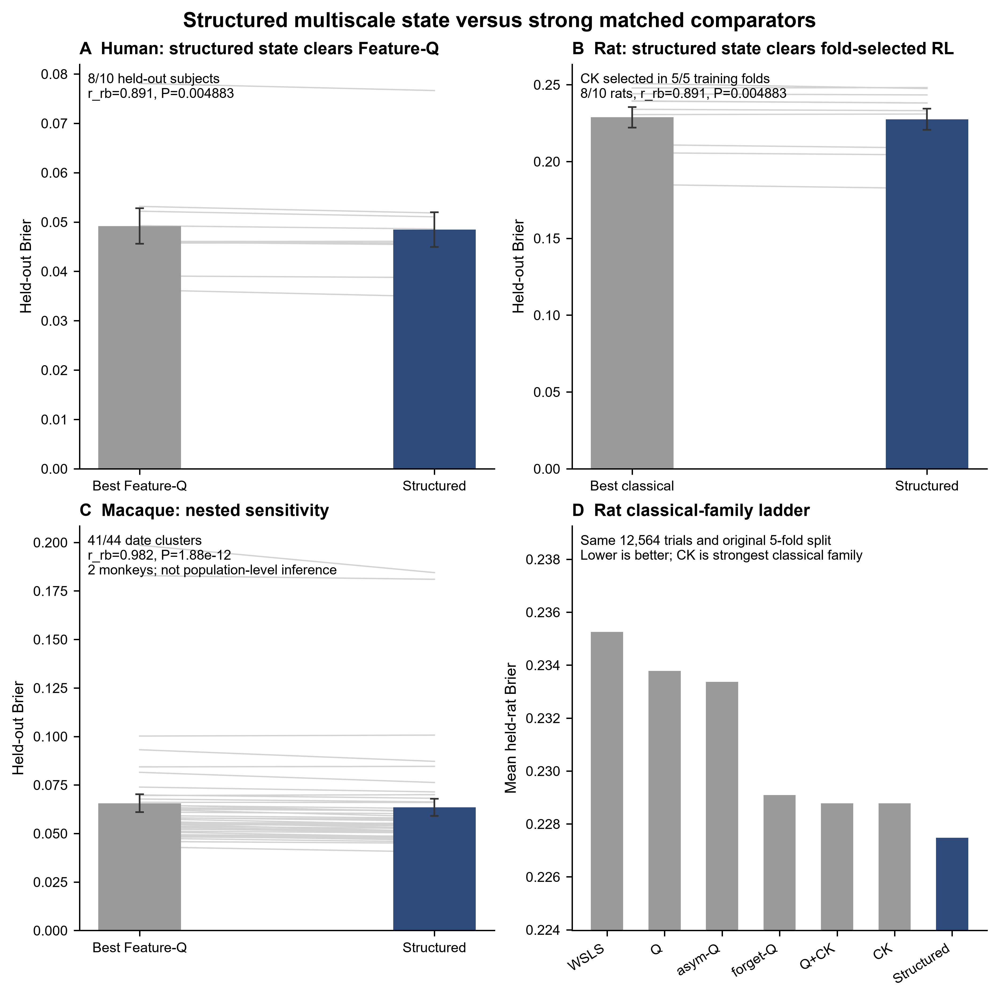
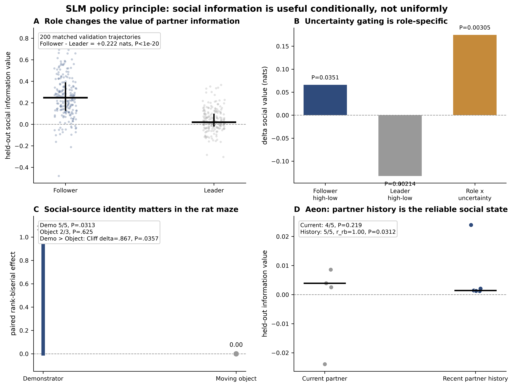

From observation to action: social information foraging, dopamine timing and causal credit assignment
Animals do not simply copy others. They learn when social information is worth sampling, convert what they see into their own action, and assign credit to social outcomes. VTA dopamine expresses these computations in sequence, while the same computational principles recur across current external tests in mouse, rat, macaque, marmoset and human.
Full SLM beats every classical RL baseline under the restricted contract; SLM+choice persistence recovers 96.9% of the Current→full-history-MLP gain.
External evidence is organized around source-tagged credit, state-gated information value, task-matched multiscale state, and sampling-to-action separation; each dataset is labeled by what it actually tests.
VTA dopamine expresses the sampling policy early, learner-linked APE in the middle, and reward/belief update after outcome.
JAWS lowers Active-belief updating in all 10 animals within-session and in 9/10 animals at the session scale; both JAWS cohorts replicate the direction.
Feed hazard rises within 3 s after observing demonstrator feeding; the state-residualized increase is +6.09 pp.
A generic GRU agent becomes better predicted by explicit SLM coordinates in every fold × seed × reward run.
This page keeps the major behavioral, computational, neural, causal and generative results together so the full SOE mechanism can be inspected from one place. Main evidence panels use SOE project data.
SOE is learned
SRI rises in 35/40 animals; live social input, visual access and familiarity all matter.
Observation becomes efficient
Learning changes conversion of observation into feeding more than it changes gross observation rate.
Social value is adaptive
Social information is most useful when current self-state leaves room for external evidence to alter policy.
SLM reaches the behavioral ceiling with mechanism
The SLM family combines near-ceiling prediction with identifiable policy, APE, RPE and social-credit variables that can be tested neurally and causally.
Learning has multiple timescales
Immediate outcome-conditioned switching, minute-scale memory and a transient cross-day prior coexist.
Observed content drives Feed
Demonstrator feeding during the preceding Observe predicts a short-latency increase in native Feed hazard.
SLM is predictive and generative
Mouse-derived SLM variables fit held-out behavior and regenerate trajectory, local strategy and behavioral-state organization in closed loop.
VTA expresses SLM computations in sequence
Only SLM is positive and significant across all three prespecified dopamine epochs: Early policy, Middle APE and Post update.
Information access and dopamine credit are separable
Visual Block reduces access to useful social content; VTA inhibition selectively disrupts Active social-reward credit across acute, within-session and session-scale tests.
SOE experience generalizes
Prior SOE training alters later novel-food engagement and observational-fear organization.
Four SLM computations organize cross-task evidence
Cross-task evidence now separates direct comparator tests, component transfer, neural convergence and literature-only support instead of counting every positive dataset equally.
SOE is acquired across the full cohort and successful learning improves observation-to-action conversion
Across all 40 animals, SRI rises from early to late training in 35/40 animals. Learners are defined from late-training SRI for the mechanistic modeling contract; the conversion comparison is therefore shown separately rather than using 27/27 learner improvement as the acquisition headline.

Swipe the table horizontally for all columns →
Foundational behavioral controls
| Discovery | Result | Interpretation | Evidence type |
|---|---|---|---|
| Acquisition | strict learner SRI ≈1.07→4.58; older n=13 lineage .67±.34→2.82±.44, P<.001 | Social coordination strengthens across training. | learner cohort |
| Live social input | Live demonstrator > simulated demonstrator; simulated SRI ≈.499±.258, n=13, P<.001. | Live-social interaction carries the effective teaching signal. | live-social control |
| Visual access | opaque barrier ≈69% reduction; current VB 3.67→1.08, 23/25 lower | successful social coordination requires visual information | historical + current visual-access evidence |
| Familiarity | unfamiliar partner reduces SRI ≈44%, n=11, P<.05 | social evidence is weighted by partner identity/familiarity | historical familiarity evidence |
| Observation phenotype | Socially directed observation rises with training. | Learning refines selective social observation. | training-dependent observation |
| Conversion | Learner Observe→Feed ≈.431→.641; learning progress β≈+.126. | Successful learners become more efficient at using sampled social information. | learner cohort |
Additional behavioral analyses
Active orienting carries predictive social information
Demonstrator feeding/spout state is highly predictive, but observer-side head direction, facing, angular velocity, social turn and social gaze nearly match the all-feature classifier. Social gaze is the strongest single observer-side feature in the manuscript lineage.
Learning reweights an existing behavioral manifold
Successful active-reward bouts are preceded by distinct states. The global manifold remains broadly stable, while occupancy shifts toward socially informative motifs with training.
Conversion progress tracks learning
Conversion progress correlates with ΔSRI (ρ≈.426, P=.0086), directly linking successful information-to-action transfer to behavioral learning.
Social information has state-dependent decision value
Social evidence is valued selectively. Held-out predictive value changes with learning stage and with the observer’s current behavioral state, revealing when external information can most strongly alter policy.
Median +0.00365 nats/decision; rrb=.725; P=.000268.
Median late−early = −0.00378 nats/decision; rrb=−.619; P=.00194.
Social information is most useful when the observer is farther from its own spout.

Multi-timescale memory recovered before the final SLM
The behavior contains fast rules, minute-scale memory and a transient cross-day state
Independent analyses reveal three separable timescales in the same behavior: immediate outcome-sensitive policy changes, multi-event history over minutes, and a retained cross-day state concentrated near the beginning of a new session.
Active/Passive outcomes increase subsequent stopping relative to Unrewarded. Active−Unrewarded stopping reaches +11.6 pp at events 21–50; Passive reaches +17.6 pp.
Selected γ=.95–.97 corresponds to roughly 4.5–7.5 min and outperforms simple run length or elapsed time.
Chronological day order ranks 1/501 against day shuffles (P=.001996); a retained prior improves 29/40 animals (P=.0125) and fades by ~event 50.

When currently observing, Active and Passive outcomes increase stopping by about +10.0 and +12.9 pp versus Unrewarded. When currently not observing, they reduce re-entry by about 9.0 and 8.3 pp.
Selected γ=.95–.97 corresponds to roughly 4.5–7.5 min. A ~20-event observation/action history adds ΔNLL=+.0348 beyond visible state/context.
A retained prior improves 29/40 animals (P=.0125). Chronological day order ranks 1/501 against within-animal whole-day shuffles (P=.001996), with the prior strongest early in the next session.

Learning is supported by fast, within-session and cross-day memory components
Observe→Active conversion increases in 22/27 learners; r_rb=.635, P=.00297.
Learner-linked APE coupling is significant in VTA; exact P=.0416.
SLM reaches the black-box predictive ceiling with interpretable, identifiable and generative variables
Full SLM strongly outperforms classical RL and compact state heuristics. Adding one generic choice-persistence term produces a parsimonious head that beats Current+choice-kernel and TinyRNN while becoming statistically indistinguishable from the full-history MLP, without giving up the latent variables used by VTA, JAWS and the artificial agent.
A common metric set makes the behavioral comparison explicit
Behavioral prediction alone leaves several high-capacity models close. The VTA section tests whether those behaviorally competitive models also reproduce the temporal neural sequence.


All rows use the same held-animal cohort. The paired effect is computed on animal-level Brier improvement relative to the Current nonlinear state model; positive rrb means lower Brier.
| Model | Brier ↓ | AUC ↑ | rrb vs Current nonlinear ↑ | Paired P |
|---|---|---|---|---|
| Full SLM | 0.170824 | 0.823320 | 0.937 | 1.04e-06 |
| SLM + choice persistence | 0.165411 | 0.834084 | 1.000 | 1.49e-08 |
| Current + Choice-kernel | 0.166401 | 0.832245 | 1.000 | 1.49e-08 |
| TinyRNN h3 | 0.168031 | 0.828605 | 0.968 | 2.09e-07 |
| Current + full-history MLP | 0.164749 | 0.835124 | 1.000 | 1.49e-08 |
| History MLP + formal-all | 0.163722 | 0.837365 | 1.000 | 1.49e-08 |
SLM beats RW, WSLS, Q-active, Q-all, asymmetric-Q, forgetting-Q, choice-kernel and Q+choice-kernel under the restricted baseline contract; rrb=1, P=1.49×10⁻⁸.
SLM+choice persistence recovers 96.9% of Current→full-history-MLP improvement and 92.4% of Current→best-history-model improvement.
Early Actor-policy: r_rb=.810, one-sided exact P=.0469; Middle APE×learning: ρ=.667, P=.0416; Post Actor-Critic RPE: r_rb=.867, P=.0195; Post belief update: r_rb=.956, P=.00586.
SLM+choice persistence reaches the flexible-history prediction ceiling

Actor-Critic, outcome-belief, Q-active, Q-all and adaptive-Q each recover 6/6; only one RW replicate is confused with adaptive-Q.
Feature-Q 20/20, policy 20/20 and state-value actor 19/20 under the 27-learner recursively generated conditional contract.
A structure-free Social World Model independently recovers SLM-like decision coordinates — and adds prospective social efficacy
SLM starts from interpretable hypotheses about policy, value, prediction error and source-specific credit. SWM asks the harder complementary question: if a recurrent model is trained without those SLM equations, does it rediscover the same decision space, and does it learn anything extra that helps explain when social sampling is useful?
ΔActive = P(Active|z,Observe) − P(Active|z,Other) predicts whether an actual Observe becomes Active; all 27/27 held-out learners are above chance.
Under real Visual Block, adding frozen SWM efficacy to the two obvious visible cues raises Active-vs-Unrewarded AUC .491→.581 (10/14, P=.0165). The increment beyond the full 13-cue readout is smaller and not significant (P=.213).
Replacing each held-out social trajectory with a matched training trajectory reduces efficacy AUC in 26/27 animals (P=1.49×10⁻⁸); no-social retraining independently reproduces the drop.
For 12-motif future prediction, SWM beats the strongest direct nonlinear MLP (NLL 1.871; 25/27 animals) and retains its advantage across 1-, 3- and 5-step horizons.


What SWM does — and does not — add to the biology
SWM strengthens three parts of the mechanism. First, it gives a prospective quantity that predicts when social sampling is likely to improve the animal's own future action. Second, a model trained without SLM structure independently contains SLM-like decision coordinates, and that subspace contributes selectively to Observe policy. Third, SWM captures additional sequential dynamics needed to predict future behavioral motifs.
Two guardrails remain important. The increase in policy–efficacy alignment across training is not statistically learner-specific because non-learners also change; it should be described as training-dependent alignment, not a learner-only emergence. Cross-task pretraining improves sample efficiency only in some low-data settings and does not establish a universal foundation model. Full method/control authority.
Social observation drives feeding through content-specific conversion
Native Feed is predicted strongly by the observer’s own state. Social information adds a second, content-specific bridge: what the demonstrator was doing at the sampled moment changes the observer’s near-term Feed probability beyond current state and simple observation recency.
Observer-only pre-action state; both sessions held out together by animal, n=40.
Feed AUC improves with current social/dyadic state; rrb=.407, P=.0120.
Feed hazard within 3 s after observing demonstrator feeding versus observing no feeding; P=.0377.
Residual acute Feed hazard after frozen self + current-social prediction; P=.0445.


Why the Feed bridge is a separate controller
Adding simple recency beyond current state does not improve held-animal Feed log loss as a group (r_rb=−.095, P=.669).
Observed content beyond recency improves Brier in 21/27 animals (r_rb=.492, P=.0123) and log loss in 17/27 (r_rb=.392, P=.0386).
On Feed decisions after observing demonstrator feeding, the dem-feed content term adds +.160 nats on average; r_rb=1, P=1.49×10⁻⁸.
Carrying the event-level SLM scalar state directly into the native Feed controller produces essentially zero paired AUC gain (r_rb=.0024, P=.497), supporting controller separation.
A mouse-derived SLM becomes an autonomous agent, and a generic GRU converges on its coordinates
The mouse-derived Artificial SLM closes the loop between Observe choice, generated social outcome and recursive state updates. A separately trained generic GRU actor-critic receives no privileged SLM latents, yet explicit SLM coordinates explain its learned policy in every fold × seed × reward run.
The fitted SLM regenerates broad learner trajectories without replaying held-out outcomes.
Full SLM gives the strongest current real-versus-generated local strategy kernel and the lowest kernel RMSE among the benchmarked agents.
Autonomous Artificial SLM preserves substantial behavioral-state organization; mean JS=.0390.


Adding explicit SLM coordinates improves Brier, NLL and AUC in all 30/30 runs, showing convergence of a generic artificial learner onto the same compact policy coordinates.
P=1.50×10⁻⁹ across animals; RPE ρ=.771 and |ΔActive belief| ρ=.734.
Auto-content beats auto-recency for Feed log loss (P=.0477) and Brier (P=.0346).
VTA dopamine expresses SLM policy, action-prediction and update signals in sequence
Aggregate reward-aligned dopamine can be captured by several update-like models. The informative result appears after resolving the episode in time: Early policy, Middle learner-linked APE and Post reward/belief update form a three-stage sequence, and only SLM is positive and significant on all three prespecified axes.
Descriptive VTA observations
Demonstrator state is represented in observer VTA
Observer DA is elevated when the demonstrator occupies the food zone and is lower outside it. Demonstrator feeding/spatial state, posture, proximity, velocity and turning all contribute; coupling is stronger in learners.
Active social gaze evokes dopamine
Observer-initiated social gaze evokes VTA DA, exceeds demonstrator-gaze responses, and precedes larger DA during active-reward eating.
Temporal SLM variables adjudicate mechanism
The newer held-block tests refine those descriptive effects into separable policy, APE and post-outcome update computations.
sampling policy
learner-linked action-policy error
reward prediction error
social belief update
credit carried forward
SLM belief gives median +1.75% MSE gain (8/9, r_rb=.867, P=.0195); UCL-style RPE gives +2.04% (8/9, r_rb=.956, P=.00781). Aggregate reward DA therefore motivates temporal decomposition rather than model selection by amplitude alone.
Early Actor-policy r_rb=.810, one-sided exact Wilcoxon P=.0469 (n=6; 5/6 positive); Middle APE×learning ρ=.667, P=.0416; Post Actor-Critic RPE r_rb=.867, P=.0195.
TinyRNN: Early −.867 (P=.0195), Middle −.548 (P=.924), Post +.733 (P=.0547). History MLP: Early −.378 (P=.359), Middle +.024 (P=.488), Post −.911 (P=.0117). Neither reproduces the three-epoch SLM sequence.


Actor-policy gain is positive in 5/6 animals; r_rb=.810. The primary P=.0469 is the pre-specified one-sided exact Wilcoxon signed-rank test.
APE coupling tracks learning in the middle observation window.
Actor-Critic RPE: r_rb=.867, P=.0195; outcome-belief update: r_rb=.956, P=.00586.
SOE is organized by coupled social-sampling and feeding policies
The convergent architecture is hierarchical. One policy determines when social information is worth sampling; a native feeding policy converts informative sampled content into food-directed action; reward outcomes update belief/value states that reorganize future sampling.
Visual Block reduces SRI and Observe→Active efficacy while gross social observation remains available.
Current state, fast outcome history, belief/value and slow prior determine when observation has the highest decision value.
Observing demonstrator feeding predicts an acute excess Feed hazard beyond observer-state prediction.
Contingent VTA inhibition selectively reduces Active social-reward belief updating and successful conversion while gross sampling is preserved.

Evidence for the two-policy architecture
Content specificity. Demonstrator feeding at the preceding Observe improves conditional Feed calibration beyond current observer state.
Controller separation. SLM coordinates organize Observe sampling and social credit, while the native Feed policy is dominated by self-state plus a short-lived content-specific eligibility signal.
Acute conversion. The real mouse shows a +7.54 percentage-point Feed-hazard increase within 3 s after observing demonstrator feeding.
Autonomous sampling. Artificial-SLM Observe choices preferentially sample behaviorally useful social content.
Visual information access and dopamine-dependent reward credit are separable operations
Visual Block and JAWS converge on reduced successful Observe→Active conversion through different computational operations: visual-information access versus VTA-dependent reward-credit updating. Gross social observation remains broadly preserved.


| Test | Primary effect | Gross observation | Computational interpretation |
|---|---|---|---|
| Visual Block | SRI ≈3.67→1.08; 23/25 lower | gross observation preserved | visual-information access / efficacy |
| VB Observe→Active | .2830→.2137; P=.00427 | observation-rate change P=.0863 | reduced information-to-action conversion |
| JAWS contingent | SRI 1.880→.786; r_rb=−.927; P=.00586 | gross observation preserved | VTA-dependent reward-credit teaching |
| JAWS Observe→Active | .3202→.1933; P=.003906 | observation fraction Δ=+.044; P=.625 | reduced successful conversion |
| JAWS Active belief | acute r_rb=−1.000, P=.00195; continuous −.927, P=.00586; session −.964, P=.00391 | choice-kernel update r_rb=+.164; P=.695 | Active social-reward belief is the coordinate selectively disrupted by VTA inhibition |

Observe→Active conversion falls from .320 to .193; 8/10 lower, r_rb=−.909, P=.00391.
The matched noncontingent comparison is .360→.325, providing the timing-control reference in the same behavioral metric.
Continuous-state replay gives Active-belief ON−OFF=−.003305 per episode; all 10 animals are lower, P=.001953.
Final Active-belief contrast falls from .0967 to .0120; Δ=−.0847, two-sided P=.003906. Standard and VTA-copy cohorts each show 5/5 lower direction.
Artificial lesion correspondence
Visual Block dopamine
SOE experience reorganizes later use of social information
Two source-rebuilt assays show transfer beyond the trained feeding contingency. Observational fear is resolved into late-cue immobility, shock-locked reactivity, sustained shock-focused monitoring and D1→D2 attenuation; social-related novelty-suppressed feeding (SAFN) shows faster and more sustained engagement with unfamiliar food.


Late cue velocity: Cliff δ=−.778, P=.0152. Shock velocity: δ=+.944, P=.00433. Late shock observation: δ=+.778, P=.0152. Shock angular-velocity change also increases (δ=+.833, P=.00866).
Shock-velocity change is larger after prior SOE training (Cliff δ=−.944, P=.00433); shock angular-velocity change gives δ=−.833, P=.0130.
Social-trained animals engage unfamiliar food earlier: Cliff δ=−.722, exact P=.01948; permutation log-rank P=.03030; feeding occurs in 6/6 vs 5/6 animals.
Initial feeding engagement is more sustained after prior SOE training: Cliff δ=+.889, P=.00866.
SLM latents forecast domain-specific generalization, not one generic “social score”
The same six Social-trained mice were carried into the later assays. The strongest new result is that a social-credit latent forecasts novel-food initiation better than simple SOE behavioral learning measures, while late action-prediction error maps specifically onto later shock reactivity.
In strict leave-one-mouse-out prediction, the SLM credit family lowers held-out absolute error in all six mice relative to a behavior family containing late SRI, ΔSRI, late Observe→Active conversion and Δconversion. Median error falls from 43.83 to 12.43 s; r_rb=1.00, P=.0156; full permutation model comparison P=.0486.
Late SOE |APE| tracks later shock-locked velocity (exact P=.0167; four-endpoint fear-family BH q=.0333). The relation is concentrated in the middle 10 shock trials, where within-timecourse BH q=.0417.
Across the full cohort, Δ|RPE| tracks ΔObserve→Active conversion (ρ=.615, P=2.4×10⁻⁵), late credit tracks late conversion (ρ=.558, P=.000181), and ΔQ / Δpolicy track ΔSRI.


Primary matched/mismatched correlations and exact permutation statistic.
Three credit definitions × 2/3/4-day windows.
Double mapping, nested prediction and biological interpretation.

Active-credit maintenance → novel-food initiation: ρ=.886; late |APE| → fear shock reactivity: ρ=.943.
Credit → fear is only ρ=.143; APE → food is ρ=−.086. One generic social-learning-strength explanation does not fit the mapping.
Matched−mismatched contrast=1.771 under the full 720×720 independent-domain exact permutation.
The latent-to-phenotype mapping is structured, not generic
Two SOE latents and two later phenotypes are placed in one 2×2 map. The decisive question is whether the biologically matched links are stronger than the mismatched links.
Strict out-of-sample audit
The domain-matched latent effects remain small-n results. For food, the nested credit-family model gives R²=.713 with permutation P=.0625, but its held-out absolute error is lower than the nested simple-behavior family in 6/6 mice and the direct full-model permutation comparison is P=.0486. For fear, the APE family gives R²=.307 (P=.0514) and predicted↔observed rank ρ=.829 (P=.0111); simple SOE behavior also predicts shock-velocity variance (R²=.548, P=.0333). Thus the strongest current claim is not that the latent always outperforms behavior, but that distinct computational variables forecast biologically matched later phenotypes, with the clearest incremental value in novel-food initiation.
The earlier four-panel nested-validation figure is retained for audit: open v2 figure.

Nested leave-one-mouse-out comparison and exact permutation tests.
Held-out absolute-error comparison used for the 6/6 food result.
First/middle/last shock-epoch specificity and within-target correction.
2-, 3- and 4-day late-SOE definitions.
Within-SOE latent-to-learning relationships across the full cohort.
Full biological interpretation, model-comparison contract and prospective predictions.
Four SLM computations organize the cross-task evidence
The cross-species claim is no longer based on counting positive datasets. Each external result is assigned to the computation it tests, and the comparator level is shown explicitly. Direct behavioral transfer, component transfer, neural convergence and literature-only support are kept separate.

Where does the structured state clear a stronger model comparator?
A current-state/no-history baseline only establishes that history helps. The stronger question is whether the structured state improves over a matched alternative model and approaches a flexible ceiling.

The external datasets do not all answer the same model-selection question
| Dataset | What is tested now | Comparator | Independent unit | Current interpretation |
|---|---|---|---|---|
| Human exp/obs | multiscale social state | best matched Feature-Q; RNN ceiling | 10 held-out subjects | 8/10 vs Feature-Q; r_rb=.891; one-sided P=.00488 |
| Macaque behavior | multiscale + source structure | Feature-Q sensitivity; RNN ceiling | 2 monkeys; 44 nested date clusters | 41/44 date clusters improve; sensitivity, not animal-level population inference |
| Rat observational maze | source-tagged social evidence | self-history; moving-object source | 5 demonstrator rats | direct source-identity/component test; not a full classical-RL adjudication |
| Rat DANDI001169 | multiscale state | foldwise BIC-selected WSLS/Q/asym-Q/forget-Q/CK/Q+CK | 10 held-out rats | CK selected in 5/5 folds; multiscale wins 8/10; r_rb=.891; one-sided P=.00488 |
| Aeon | recent partner history | self/current-social baselines | 5 experiments | social-history component test |
| Cooperative foraging | social information value / policy | self-only; flexible RF | fixed held-out trajectories from one dyad | within-dyad validation consistency; not animal-level generalization |
Full target data: all held-out sessions favor the SOE-trained recurrent core; both monkeys are positive in all five sessions.
Direction is positive at full target data but does not reach the confirmatory threshold; transfer is not universal.
Macaque pretraining improves SOE in 5/5 folds with 2 or 4 SOE training animals, but the advantage disappears with 8 animals.

SOE-learned recurrent dynamics transfer selectively to macaque choice
This is a stricter test than re-fitting the SLM equations in another dataset. The recurrent core is pretrained on SOE, frozen, and only a new target adapter/head is trained. The comparator uses the same target adapter/head with an equally frozen random recurrent core.
Social information is useful conditionally, not uniformly
This is the strongest cross-task behavioral convergence: the value of partner information depends on decision-maker state, source identity, role and recent social history.

The two-controller architecture is strongest in SOE, with an external architectural analogue
In SOE, the information-sampling policy and native Feed policy are separable: sampled demonstrator-feeding content, not a shared scalar SLM state, predicts short-latency Feed conversion. The marmoset task provides the closest external analogue because gaze/sampling gates partner evidence before that evidence is accumulated into choice.
Recent Observe alone and the old scalar SLM state are insufficient; observed demonstrator-feeding content produces the short-latency conversion signal.
Partner evidence is gated by active gaze and then accumulated into decision variables. With only two animals, this is an architectural analogue rather than population-level replication of the SOE two-policy model.
Demonstrator evidence predicts the observer's later choice more strongly than a moving-object source, supporting content-to-action transfer without demonstrating an explicit sample controller.
Neural datasets are mapped to specific computations without treating neurons as animals
ACC tests the multiscale-state component. Reward DA provides a prospective behavior bridge with DLS dLight as a negative control. Marmoset effects are displayed separately for the two recorded animals; neuron-level P values are not used as population inference.

The current cell-slope reanalysis is not used as independent evidence
The published Noritake/Isoda study reports agent-specific self- and other-RPE populations and an O-RPE decoder. Our earlier replot selected the published RPE-defined subpopulations and then re-estimated RPE slopes from those same population files; that is circular for establishing the existence of the RPE effect. It has therefore been removed from the quantitative main figure. The public release provides preselected population objects and decoder outputs, but not a trial-resolved table that currently lets us redo cell classification on one half of trials and test on the other half. A split-half or held-out cross-source validation is required before this dataset is promoted again as an independent quantitative SLM-credit test.
The original source-data replot remains below for audit only; its cellwise P values are not part of the cross-species evidence count.
What the current external evidence can support
Rat demonstrator versus moving-object specificity and macaque source-aware state support source identity. Primate RPE remains literature/audit support until independent validation.
SOE state gating, cooperative role-by-uncertainty and Aeon partner history converge on conditional information value.
Human, rat DANDI001169 and macaque structured states clear stronger matched classical/Feature-Q comparators; a frozen SOE recurrent core also transfers to macaque choice. Mouse 001632 remains component-level timing support.
SOE establishes separate Observe and Feed control. Marmoset gaze-gated evidence accumulation is the closest current external architectural analogue.
Dataset-depth audits and source plots

Retained for audit; not used as the main cross-dataset figure because small-n effects saturate near +1 and mix different independent units.

Brier, NLL, AUC and source/multiscale ablations.

Rat-level, session-level and moving-object specificity checks.

Held-out trajectory values; trajectories are not treated as independent animals.

Source-data units for the two animals; cell-level P values are descriptive within-animal evidence only.

Selection-circular for our slope reanalysis; excluded from quantitative cross-species inference pending split-half/held-out validation.

Task-adaptive temporal-state component test; not social SLM transfer.
Human, rat and macaque stronger-comparator results with the independent-unit contract explicit.
Per-rat Brier values under the original same-zoo held-rat folds; classical family selected only from each training fold.
WSLS, Q, asymmetric-Q, forgetting-Q, CK and Q+CK versus structured multiscale history.
Evidence tier, SLM component, unit, effect and interpretation.
All external datasets, including component-only and control results.
Seed-averaged held-out-unit effects for macaque and Aeon.
Nested-session direction separately for Lalo and Offenbach.
Targeted reverse-transfer results across 2, 4 and 8 SOE training animals.
Open the exact analysis authority behind the page
The visual page is a navigation layer. Numeric authority remains in the versioned checkpoint, analysis master, focused mechanistic notes and downloadable CSV tables below.
Comparator correction, primate-RPE circularity audit, four-computation synthesis, frozen-core transfer, and same-animal generalization boundary.
Latest project-wide analysis authority, statistics, provenance and reproducibility records.
Comprehensive analysis/results authority.
Strict future Feed contract and observed-content bridge.
Generated sampling schedule tested against native Feed conversion.
Generative sufficiency, recurrent convergence and biological grounding.
Visual Block and JAWS computational lesions.
Canonical held-animal behavioral model table.
Audited behavior, Early/Middle/Post DA, JAWS, recovery and generation registry.
35/36 six-family recovery and 59/60 focused recovery authority.
Recovered early phenotype, social gaze, motifs, learning and historical controls.
Frozen Early/Middle/Post model evidence.
Project-wide bounded effects and inferential units.
Brier, AUC, paired rank-biserial effect and paired P on the same held-animal cohort.
Source values for the structured-state comparison figure.
Fast stopping, stop/re-entry, 20–33-event history, slow latent and cross-day prior statistics.
Contingent, noncontingent, continuous within-session, session-scale and cohort-replication statistics.
Detailed generalization endpoints used by the expanded figure.
Full-cohort SRI acquisition statistic used in the revised phenotype panel.
Animal-level SLM+choice-persistence comparisons against Current+CK, TinyRNN and full-history MLP.
Task-specific bounded effects and exact P values used in the cross-species evidence plot.
Dataset × SLM-principle map used in the cross-species evidence matrix.
Corrected Early Actor-policy effect and the frozen Early/Middle/Post comparator statistics.
Baseline, structured-state and flexible-reference losses for contracts with all three models available.
All 12 external dataset families with social/non-social source type and principle-level evidence coverage.
Exact comparison, independent-unit n, wins, paired rank-biserial effect and P for every unit-level panel.
Dataset-level baseline and structured median metrics used to annotate the raw benchmark panels.
Effect sizes, bootstrap 95% CIs, wins, n and exact P values used in the cross-dataset forest plot.
Seven-sequence Brier/NLL/AUC and module-ablation statistics for DANDI001435.
Rat-level and session-level source-evidence effects across Brier, NLL and accuracy.
Per-animal trial-clock versus trial+time statistics by reward-spacing group.
Independent-unit counts for the raw marmoset mechanistic panels.
Exact held-out trajectory-level social-value, predictive and uncertainty-gating comparisons.
Per-trajectory values used in the cooperative-foraging benchmark figure.
Same-animal domain-matched tests, family correction and nested leave-one-mouse-out validation.
Current page build: 2026-10-05 · mobile-audited scientific working page.